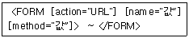
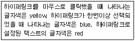
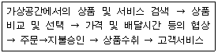
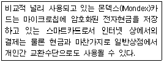
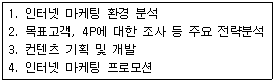
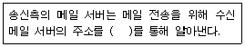
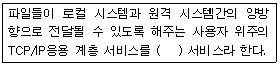
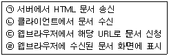
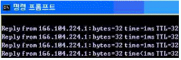

전자상거래운용사 (2008-04-19 기출문제)
1과목: 인터넷 일반
1. HTML에 대한 설명이다. 틀린 것은?
- HTML은 HyperText Markup Language의 약자이다.
- HTML은 SGML에 기초하여 제정되었다.
- HTML에서의 색상은 CMYK 형식으로 지정한다.
- 웹을 통해 접근되는 대부분의 웹페이지 작성에 사용된다.
(정답률: 알수없음)

2. 다음 중 검색엔진의 구성 요소인 로봇(Robot)에 대한 설명으로 옳지 않는 것은?
- 일종의 자동 순회 프로그램이다.
- 로봇 프로그램을 일컫는 용어로 스파이더, 크롤러, 스쿠터 등이 있다.
- 카탈로그(Catalog)라고도 불려지기도 하며 웹페이지의 내용을 저장하고 있는 거대한 도서관이다.
- 웹에 있는 문서를 자동으로 찾아서 그 문서의 정보를 모아오는 검색 프로그램을 말한다.
(정답률: 64%)
3. 홈페이지 문서를 작성할 때 사용하는 스크립트 언어에 대한 설명으로 올바르지 않은 것은?
- 스크립트 언어는 수행하는 위치에 따라 서버 사이드 스크립트 언어와 클라이언트 사이드 스크립트 언어로 분류할 수 있다.
- 일반적으로 스크립트 언어는 HTML 태그와 같이 사용할 수 있다.
- 스크립트 언어는 일반적으로 컴파일 언어로서 컴파일 과정을 거쳐야 한다.
- 스크립트 언어에는 JavaScript, ASP, PHP와 같은 언어가 있다.
(정답률: 70%)
4. 다음 중 DHCP에 관한 설명으로 가장 옳지 않은 것은?
- DHCP는 Dynamic Host Configuration Protocol의 약어이다.
- DHCP는 사용자가 네트워크에 접속하면 자동으로 IP를 부여하는 방식이다.
- DHCP는 사용자들이 자주 바뀌는 학교와 같은 환경에 특히 유용하다.
- DHCP클라이언트는 임대된 주소의 사용이 끝나면 자동으로 주소사용 연장을 수행한다.
(정답률: 알수없음)
5. 다음 ASP의 기본 객체들 중 웹 사이트에 접속한 모든 사용자가 공유하는 데이터를 관리할 때 사용하는 객체는 어느 것인가?
- Application
- Response
- Server
- Session
(정답률: 92%)
6. 내부의 랜과 외부 네트워크 사이에서 방화벽 역할을 수행하며, 동시에 여러 외부서버의 데이터를 대신 받아주는 역할을 하는 서버는?
- POP 서버
- DNS 서버
- 프록시 서버
- 고퍼 서버
(정답률: 60%)
7. 웹 디자인에 사용되는 언어와 소프트웨어 중 관련이 없는 것은 무엇인가?
- HTML
- Photoshop
- JavaScript
- Gopher
(정답률: 60%)
8. 다음에 기술된 FORM 속성의 설명 중 틀린 것은?

- action 속성은 폼을 받아서 처리할 프로그램의 URL이다.
- name의 속성은 FORM에 존재하는 항목들의 이름값이다.
- method는 폼의 항목에 입력된 데이터를 서버에 전송하는 방식을 말한다.
- FORM 태그는 ＜FORM＞시작태그로 시작해서 ＜/FORM＞ 종료태그로 마무리 된다.
(정답률: 64%)
9. CGI에 대한 설명으로 잘못된 것은?
- HTML의 단점을 보완하고 동적 페이지를 제작할 수 있는 기술이다.
- 웹 서버의 기능 확장을 위하여 TCP/IP 프로토콜을 확장한 것이다.
- HTML에 양방향성의 상호작용을 가능하게 한다.
- 전송 방식에는 Post 방식과 Get 방식이 있다.
(정답률: 알수없음)
10. 다음의 내용을 HTML로 구현한 것 중 올바른 것은?

- ＜body link="red" vlink="blue" alink="yellow"＞
- ＜body link="blue" vlink="yellow" alink="red"＞
- ＜body link="blue" vlink="red" alink="yellow"＞
- ＜body link="yellow" vlink="blue" alink="red"＞
(정답률: 알수없음)
11. 다음 중 자바스크립트 언어 사용법에 대한 설명 중 맞는 것은?
- 자바 스크립트는 대소문자를 구분하지 않는다.
- ＜script＞태그와 ＜/script＞ 태그 사이에 자바 스크립트 코드를 작성한다.
- 자바 스크립트 코드는 ＜head＞ ~ ＜/head＞태그안에만 존재할 수 있다.
- 변수를 사용하기 위해서는 미리 타입을 정해야 한다.
(정답률: 70%)
12. 웹 문서에서 문서간의 연결을 하고자 한다. 연결하고자하는 문서의 주소가 http://license.korcham.net이라할 때 다음 중 옳은 것은?
- ＜A link="http://license.korcham.net"＞대한상공회의소 ＜/A＞
- ＜A linking="http://license.korcham.net"＞대한상공회의소＜/A＞
- ＜A href="http://license.korcham.net"＞대한상공회의소＜/A＞
- ＜A go="http://license.korcham.net"＞대한상공회의소＜/A＞
(정답률: 59%)
13. 전자메일(e-mail)에 대해서 설명한 내용 중 올바르지 않는 것은?
- 메일에 원하는 텍스트, 음성, 이미지 파일 등을 첨부해서 보낼 수 있다.
- 메일을 받는 수신자의 주소를 정확히 명시했는데 메일의 내용을 쓰지 않고 보냈을 경우에는 수신자에게 전달되지 않고 되돌아 온다.
- 받은 메일의 내용을 다른 여러 사람이 볼 수 있도록 이 내용을 그대로 전달할 수 있다.
- 메일을 받는 수신자를 한 사람이 아닌, 여러 사람으로 지정할 수 있다.
(정답률: 64%)
14. 다음 중 광고성 정보를 전자메일을 통하여 전송하고자 할 때 지켜야 할 사항으로 가장 옳지 않은 것은?
- 누구든지 수신자의 명시적인 수신거부의사에 반하여 영리목적의 광고성 메일을 전송하여서는 안 된다.
- 전자메일의 제목란에는 광고임을 표시하는 문구가 있어야 한다.
- 송신자는 수신자가 수신을 거부할 수 있는 의사표시를 용이하게 할 수 있도록 하여야 한다.
- 영리목적의 광고를 전송하는 사람은 혹시 있을지도 모르는 공격에 대비하여 전송자의 명칭 및 연락처를 명시하지 않을 수도 있다.
(정답률: 알수없음)
15. 업무 중에 업무와 관련이 없는 웹 서핑을 하는 경우 결과가 아닌 것은?
- 업무시간을 낭비하는 것이다.
- 업무와 관련이 없는 웹 서핑으로 업무효율이 높아진다.
- 서버에 원치 않는 트래픽 증가로 합법적으로 사용하는 사람의 웹 접속을 느리게 한다.
- 원치 않는 e-메일을 불러들일 수 있다.
(정답률: 59%)
16. 다음 중 한번의 검색으로 여러 개의 검색엔진을 검색한 효과를 얻을 수 있는 검색엔진은?
- 단순 검색엔진
- 키워드 검색엔진
- 메뉴 검색엔진
- 메타 검색엔진
(정답률: 알수없음)
17. 통신 및 대화의 비밀과 자유에 대한 제한은 그 대상을 한정하고 엄격한 법적 절차를 거치도록 함으로써 통신비밀을 보호하고 통신의 자유를 신장함을 목적으로 제정된 된 것은?
- 정보통신윤리강령
- 공공기관의 개인정보보호에 관한 법률
- 통신비밀보호법
- 컴퓨터프로그램보호법
(정답률: 알수없음)
18. 인터넷에 수많은 컴퓨터가 연결되어 있다. 특정한 컴퓨터를 지정하여 연결하기 위해서는 서로 다른 주소가 필요하다. 다음 중 인터넷에서 주소로 사용할 수 없는 것은?
- IP 주소
- Domain 네임
- URL
- 컴퓨터 이름
(정답률: 64%)
19. 데이터베이스의 기본 키에 대한 설명이 올바른 것은?
- 기본 키는 모든 행(레코드)의 대표적인 값이며, 중복이 허용 된다.
- 기본 키는 NULL 값일 수 있다.
- 하나의 테이블에 기본 키는 1개 이상이다.
- 기본 키는 하나 이상의 열(항목)을 조합하여 구성한다.
(정답률: 알수없음)
20. LAN을 사용해서 인터넷 접속을 하려고 한다. 인터넷 프로토콜 TCP/IP를 수동으로 설정하기 위해 LAN 관리자로부터 알아봐야 할 정보가 아닌 것은?
- IP 주소
- 서브넷 마스크
- 기본 게이트웨이
- 사용자 계정
(정답률: 59%)
2과목: 전자상거래 일반
21. 다음 중 서로 관계없는 것끼리 묶어진 것은?
- 비교구매 - 지능형 에이전트
- 상세상품정보 - 전자카타로그, 사이버전시
- 비교구매 - 메타몰(Meta Malls)
- 인터넷역경매 - 다수의 구매자
(정답률: 82%)
22. 다음에서 전자상거래가 제품이나 서비스를 공급하는 기업에 미치는 영향을 잘못 설명한 것은?
- 물리적 ㆍ 시간적 ㆍ공간적 한계의 극복
- 생산자와 소비자의 직거래 가능성
- 중간상(Intermediary)의 역할 변화
- 생산자와 소비자의 명확한 역할 구분
(정답률: 54%)
23. 인터넷 비즈니스 모델의 구성요소(3C)가 아닌 것은?
- Contents : 인터넷이나 컴퓨터 화면에 흐르는 문자나 그림, 음성, 동영상 등으로 구성된 각 분야의 정보를 말한다.
- Commerce : 인터넷 등의 네트워크를 통해 거래되는 유형, 무형의 상품과 서비스로 이루어지는 상거래를 말한다.
- Communication : 격지(공간적)자간에 자신의 의사, 지식, 감정 또는 각종 자료를 포함한 정보를 주고받는 행위 또는 현상을 말한다.
- Community : 네트워크 상에서 인간관계를 형성하여주고 그 구성원들의 요구를 파악하여 충족시켜주는 공간을 말한다. 동호회, 게시판, 채팅방 등이 있다.
(정답률: 70%)
24. 다음 중 전자상거래의 발전과정을 설명한 것이다. 잘못 설명한 것은?
- 전자상거래는 금융, 신용, 소프트웨어, 영상산업, 서적 등의 글로벌 거래를 가능하게 하였다.
- 디지털 기술을 토대로 하는 e-비즈니스시대에 가장 중요한 포인트가 되는 것은 기업 중심의 패러다임이다.
- 전자상거래의 무게중심이 B2C에서 B2B로 전이되면서 e-Marketplace, e-CRM, 전자조달 등 새로운 유형의 e-비즈니스 형태가 등장하고있다.
- 전자상거래의 적용기술이 다양해지고 응용범위도 단순한 거래 행위를 벗어나 기업 간, 기업 내로 확대하면서 새로운 개념인 e-비즈니스가 등장하게 되었다.
(정답률: 67%)
25. 물리적 시장과 비교하여 전자시장의 특징을 바르게 설명한 것은?
- 거래 비용이 다소 높다.
- 제한된 회원들에 한하여 정보에 접근할 수 있다.
- 원격 통신망을 통해 언제, 어디서, 누구나 전자시장에 참여할 수 있다.
- 소비자의 프로필과 구매 행동 정보를 이용하여 대중화된 일반적 서비스를 제공한다.
(정답률: 100%)
26. 소비자의 구매단계는 “구매 전 상호작용”, “구매”, “구매 후 상호작용”으로 나눈다. 다음 나열된 단계 중 “구매” 단계에서 이루어지는 것을 바르게 나열한 것은?

- 주문, 지불승인, 상품수취
- 지불승인, 상품수취, 고객서비스
- 상품 비교 및 선택, 가격 및 배달시간 등의 협상, 주문
- 가상공간에서의 상품 및 서비스 검색, 상품 비교 및 선택, 가격 및 배달시간 등의 협상
(정답률: 80%)
27. 다음 전자상거래 유형에 대한 설명 중 틀린 것은?
- B2B는 기업과 기업사이에서 일어날 수 있는 다양한 전자상거래를 말한다.
- B2C는 공동구매나 역경매와 같이 기업이 소비자에 대해 거래의 주도권을 행사하는 시장이다.
- C2C는 소비자 사이에 직접적인 거래가 이루어지는 것을 말한다.
- B2G는 기업과 정부간에 일어날 수 있는 다양한 전자상거래를 말한다.
(정답률: 73%)
28. 다음 중 전자상거래 배송의 특성으로 보기 어려운 것은?
- 배송시간의 사전계획이 어렵다.
- 소비자가 배송시간을 선택할 수 있다.
- 배송시간의 단축화가 요구된다.
- 최종 배송점이 제한 및 집중화되는 경향이다.
(정답률: 70%)
29. 다음 중 인바운드 텔레마케팅(Inbound Tele-Marketing)에 대한 설명으로 적절하지 못한 것은?
- 고객 혹은 잠재고객으로부터 전화를 수신하는 형태이다.
- 제품홍보 및 판매증대에 많이 사용될 수 있다.
- 카달로그 통신판매의 전화수주에 사용된다.
- 대중매체 광고에 의한 반응획득에 사용된다.
(정답률: 알수없음)
30. 인터넷을 통해 판매되는 제품은 물리적 상품과 디지털 상품으로 구분할 수 있다. 다음 중 디지털 상품에 대한 설명이 잘못된 것은?
- 한계비용이 제로(zero)에 가깝다.
- 반복 생산비용이 높다.
- 복제의 가능성이 높다.
- 영구적인 보관이 가능하다.
(정답률: 84%)
31. 인터넷의 발전으로 인해 마케팅 환경에도 커다란 변화가 이루어지고 있다. 다음 중 이러한 변화를 적절히 설명한 것은?
- 인터넷의 발전으로 인해 외상 거래가 보다 용이해졌다.
- 인터넷의 발전에 따라 판매원과의 직접 접촉이 증가되었다.
- 인터넷의 발전으로 제품에 대한 주문이 기업(공급자)의 역할로 확고해졌다.
- 인터넷의 발전으로 정보제품은 중간 유통단계를 거치지 않고 직접 전달할 수 있게 되었다.
(정답률: 90%)
32. 다음 중 CRM(고객관계관리)에 대한 설명으로 적합하지 못한 것은?
- 기존 고객의 관리보다는 더 많은 신규 고객의 유치에 중점을 두는 것
- 고객과의 장기적이고 깊은 신뢰관계를 구축하는 것
- 목표시장 및 고객과의 관계에 집중하는 것
- 규모의 경제보다 고객의 충성도를 높혀 수익을 창출하는 것
(정답률: 70%)
33. 인터넷상의 소비자에 대한 다음 설명으로 가장 옳지 않은 것은?
- 상품 구매 시 구매후기 등 타 구매자의 의견을 고려하는 편이다.
- 인터넷으로 구매하는 경우에 불안감을 갖고 있다.
- 한 사이트를 이용하는 경우 좀처럼 다른 사이트로 옮겨가지 않으려는 특성이 있다.
- 다른 사이트와의 서비스나 가격 등에 대해 많이 비교 하는 편이다.
(정답률: 알수없음)
34. 전자상거래에서 물류 관리의 중요성이 증대되는 이유로 가장 적절하지 않은 것은?
- 물류를 통한 비용 절감
- 고객 서비스의 향상에 기여
- 디지털 상품의 거래 증대
- 소량의 상품 거래 증대
(정답률: 67%)
35. 최근 물류 동향에 대해 잘못 설명하고 있는 것은?
- 프로세스 관리로부터 기능별 관리로 변화 되고 있다.
- 일관된 서비스가 아닌 차별화된 서비스를 제공하고 있다.
- 운영자 위주의 물류 관리로부터 고객위주의 물류 관리로 전환되고 있다.
- 실물재고 관리에서 전자적 정보관리로 변화하고 있다.
(정답률: 65%)
36. 다음은 전자화폐 구분 중 어떤 분류를 설명한 것인가?

- 가치저장형
- 지불지시형
- 네트워크형
- 전자수표형
(정답률: 46%)
37. 정부가 각종 세금, 공과금을 인터넷을 통해서 납부하도록 하는 것은 다음 중 어느 것에 해당 하는가?
- B to C
- B to B
- B to G
- C to G
(정답률: 알수없음)
38. 배너광고의 효과를 노출(presence)효과에 클릭(click)효과로 나눌 경우, 다음 중 노출효과로 보기 어려운 것은?
- 심벌마크(symbol mark)를 통한 구매동기 유발
- 기업, 상품 및 서비스의 상세정보 제공
- 캐치카피(catch copy) 혹은 캐치프레이즈(catch phrase)를 통한 구매동기 유발
- 기업명, 상품 및 서비스명의 인지도 향상
(정답률: 알수없음)
39. 다음 제시된 내용을 인터넷 마케팅 전략수립을 위한 전개단계로 바르게 나열한 것은?

- 1 → 2 → 3 → 4
- 1 → 2 → 4 → 3
- 2 → 1 → 3 → 4
- 2 → 3 → 1 → 4
(정답률: 60%)
40. 다음 인터넷 광고의 유형 중 TV프로그램 전후에 광고가 방영되는 것처럼 사이트의 페이지가 바뀌는 중간에 전체화면 크기로 나타나는 광고를 무엇이라고 하는가?
- 배너(Banner) 광고
- 삽입형(Intersitials) 광고
- 스폰서형(Sponsorship) 광고
- 전자우편(E-mail) 광고
(정답률: 70%)
3과목: 컴퓨터 및 통신 일반
41. 다음 중 허브를 사용하는 경우의 네트워크 구조(Topology)로 맞는 것은?
- 링형
- 스타형
- 트리형
- 그믈형
(정답률: 알수없음)
42. 하드웨어나 소프트웨어를 구입할 때 서비스로 제공되는 프로그램을 무엇이라 하는가?
- 상용 소프트웨어
- 프리웨어(Freeware)
- 번들(Bundle) 프로그램
- 쉐어웨어(Shareware)
(정답률: 50%)
43. 컴퓨터이름이 Hyperion인 컴퓨터에 폴더명이 Share인 공유 폴더를 만들었다. 이 공유폴더에 네트워크 드라이브를 연결하기 위해 탐색기 주소 창에 입력해야 하는 명령어로 맞는 것은?
- //Hyperion/Share
- //Share/Hyperion
- \\Hyperion\Share
- \\Share\Hyperion
(정답률: 알수없음)
44. 다음 중 암호화 기술을 설명한 것이 틀린 것은?
- 암호화 기술이란 평문(원문)을 암호문으로 바꾸고, 다시 암호문을 원문으로 바꾸는 기술을 말한다.
- 암호화 기술에는 크게 비밀키 암호화 방식과 공개키 암호화 방식이 있다.
- 비밀키 암호화 방식은 암호화할 때 키와 복호화할 때 키가 같다.
- 공개키 암호화 방식은 비밀키 암호의 문제점을 해결하고자 개발된 방법으로 암호화 및 복호화하는 방식이 간단하고 속도가 비밀키 암호화 방식보다 빠르다.
(정답률: 알수없음)
45. 네트워크 주소 211.253.212.0과 211.253.213.0을 사용하는 두 네트워크를 연결하려면 다음 중 어떤 장비를 사용해야 하는가?
- 라우터
- 브리지
- 스위치
- 리피터
(정답률: 50%)
46. 기업에서 사용하는 각종 컴퓨터 프로그램 및 솔루션을 판매하는 것이 아니라 온라인을 통해 빌려주는 사업을 무엇이라 하는가?
- ERP(Enterprise Resource Planning)
- SCM(Supply Chain Management)
- ASP(Application Service Provider)
- IP(Information Provider)
(정답률: 알수없음)
47. 다음의 ( )안에 들어갈 알맞은 것은?

- DNS(Domain Name System)
- SMTP(Simple Mail Transfer Protocol)
- Internet
- Intranet
(정답률: 55%)
48. 다음 중 이메일을 통해 전송된 워드 문서로 가장해서 아웃룩이나 아웃룩 익스프레스 프로그램을 이용하여 많은 인터넷이나 회사의 메일서버를 다운시켰던 1999년에 처음 발견된 바이러스는 무엇인가?
- 멜리사 바이러스
- 러브레터 바이러스
- CIH 바이러스
- 슬래머 웜 바이러스
(정답률: 54%)
49. 클라이언트 측에서 요구하는 인터넷 서비스를 지원하기 위해 서버 시스템 측에서 클라이언트의 요구를 식별할 수 있어야 한다. 서버 측에서 FTP, HTTP 등과 같은 인터넷 서비스를 식별하는 데 사용하는 정보는?
- 서버 이름
- 인터넷 주소
- 프로그램명
- 포트 번호
(정답률: 64%)
50. 다음 ( ) 안에 들어갈 적당한 서비스는?

- Web
- FTP
- Telnet
- merchant
(정답률: 알수없음)
51. 다음 중 메일을 수신하기 위해서 사용되는 프로토콜은?
- POP3
- SMTP
- HTTP
- FTP
(정답률: 64%)
52. 다음은 TCP/IP에서 Internet Protocol(IP)에 대한 설명이다. 가장 적합하지 않은 것은 어느 것인가?
- 각 통신망의 접근(access)프로토콜을 변화시키지 않으면서 서로 연결시켜주는 프로토콜이다.
- 비연결형(connectionless)방식으로 동작한다.
- 각 패킷은 독립된 경로를 통해서 전송된다.
- 에러제어(error control) 기능을 수행한다.
(정답률: 80%)
53. 다음의 보안방법 중 성격이 틀린 하나를 고르시오.
- 방화벽
- SSL
- DES
- 전자인증
(정답률: 50%)
54. 다음 중 웹에서 html 문서가 전달되는 순서를 바르게 나열한 것은?

- (ㄱ) → (ㄴ) → (ㄷ) → (ㄹ)
- (ㄷ) → (ㄱ) → (ㄴ) → (ㄹ)
- (ㄷ) → (ㄴ) → (ㄹ) → (ㄱ)
- (ㄱ) → (ㄷ) → (ㄹ) → (ㄱ)
(정답률: 알수없음)
55. 서비스 사업자가 제공하는 공중망이나 인터넷을 마치 자사가 직접 구축한 전용 WAN 백본처럼 사용할 수 있도록 해주는 네트워크 기술은?
- W-PKI(Wireless Public Key Infrastructure)
- VPN(Virtual Private Network)
- PDA(Personal Digital Assistance)
- AP(Access Point)
(정답률: 알수없음)
56. 일반적인 컴퓨터의 CPU내에 기본적으로 장착된 장치가 아닌 것은?
- 제어장치(Control Unit)
- 기억장치(Main Memory)
- 출력장치(Output Unit)
- 연산장치(Arithmetic＆ Logical Unit)
(정답률: 알수없음)
57. 몇 개의 작업을 동시에 주기억장치에 적재하여 실행하는 처리 기법은 무엇인가?
- 일괄처리 (Batch processing)
- 다중프로그래밍 (Multiprogramming)
- 실시간처리 (Real time processing)
- 시분할처리 (Time sharing processing)
(정답률: 60%)
58. 다음 중 TCP/IP에 관한 설명으로 잘못된 것은?
- 유닉스 운영체제에서만 사용 가능하다는 한계가 있다.
- ARPANET과 밀접한 관계가 있다.
- 인터넷의 기본적인 프로토콜이다.
- 특정 하드웨어에 독립적으로 사용될 수 있다.
(정답률: 60%)
59. 아래 그림은 다음 중 어떤 명령어를 실행한 결과인가?

- net start
- ping
- ipstatus
- ipconfig
(정답률: 64%)
60. 인터넷 트래픽을 원활하게 소통시키기 위한 인터넷 연동 서비스로서, 인터넷 트래픽 교환을 위한 인터넷 스위치 장비를 제공하는 것을 일컫는 용어는 무엇인가?
- IX(internet exchange)
- Backbone
- ISP
- Data Center
(정답률: 50%)